Explore Taipei
A Brief History
Taipei developed from a Qing-era walled settlement and later Japanese colonial capital into the administrative centre of the Republic of China on Taiwan. Rapid post-war growth replaced many wooden neighbourhoods with commercial towers, yet districts such as Dadaocheng and Wanhua preserve merchant shophouses, temples, and memorial spaces from earlier periods.
Attractions Map
Top Sights & Activities
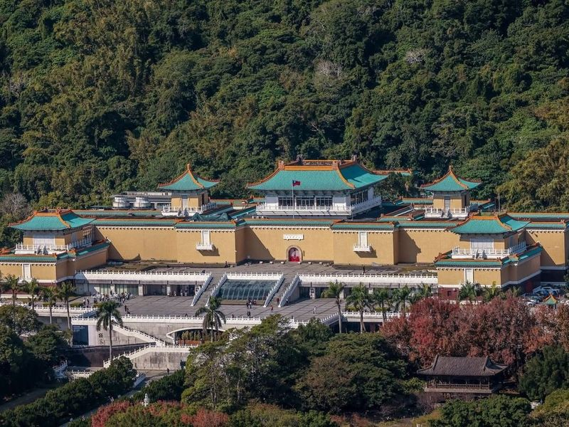
Taipei 101 Shopping center
Taipei 101 is a 508-metre tower completed in 2004 that held the world height record until 2010. Its stacked pagoda form incorporates tuned mass dampers visible on observation decks. Retail floors and offices occupy the lower levels in the Xinyi financial district east of the city centre.
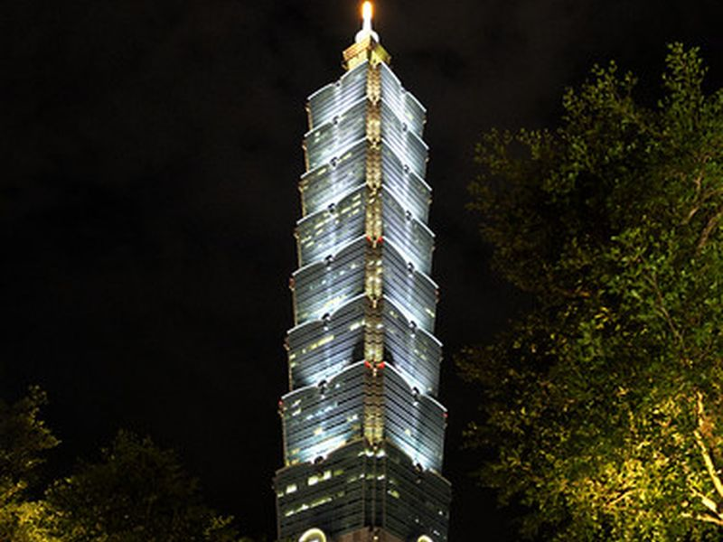
Taipei 101 Observatory
Taipei 101 is a 508-metre tower completed in 2004 that held the world height record until 2010. Its stacked pagoda form incorporates tuned mass dampers visible on observation decks. Retail floors and offices occupy the lower levels in the Xinyi financial district east of the city centre.
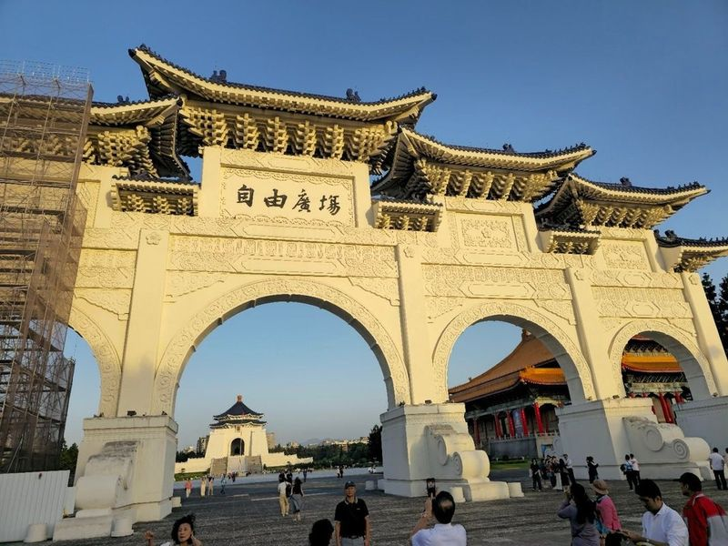
Chiang Kai-shek Memorial Hall
The Chiang Kai-shek Memorial Hall is a large white-walled monument in central Taipei completed in 1980. Its octagonal blue-tiled roof shelters a bronze statue of the former Republic of China president, with exhibition galleries below documenting 20th-century Chinese civil war history. Liberty Square flanked by the National Concert Hall and Theatre frames the approach.
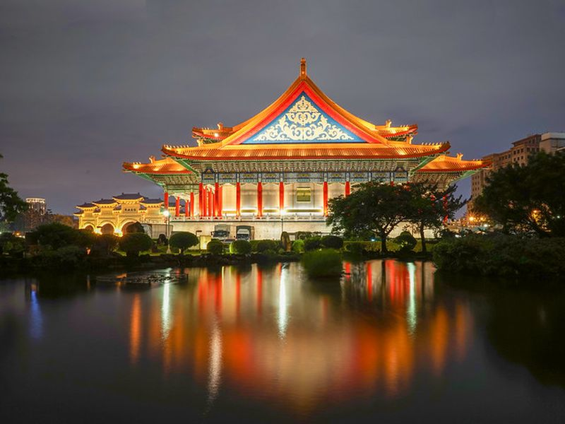
National Concert Hall
The National Concert Hall stands on the north side of Liberty Square in central Taipei, completed in 1987 as part of the Chiang Kai-shek Memorial complex. Its tiered Chinese palace-style roof houses a main auditorium for symphony concerts, opera, and national ceremonies, facing the matching National Theater across the vast ceremonial plaza.
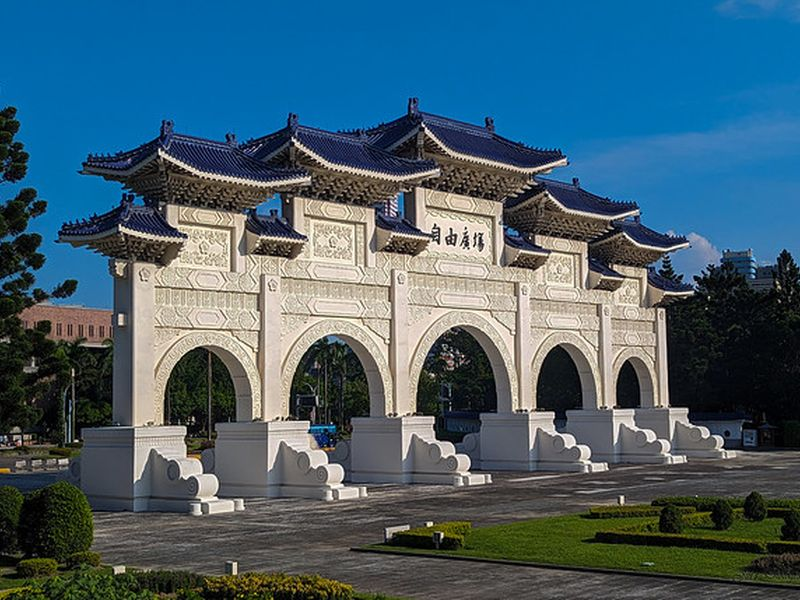
Liberty Square
Liberty Square Archway frames the vast plaza leading to the Chiang Kai-shek Memorial Hall in central Taipei. The ceremonial space hosts national day gatherings and daily honour guard ceremonies at the monument steps, with the National Theatre and Concert Hall lining the flanks.
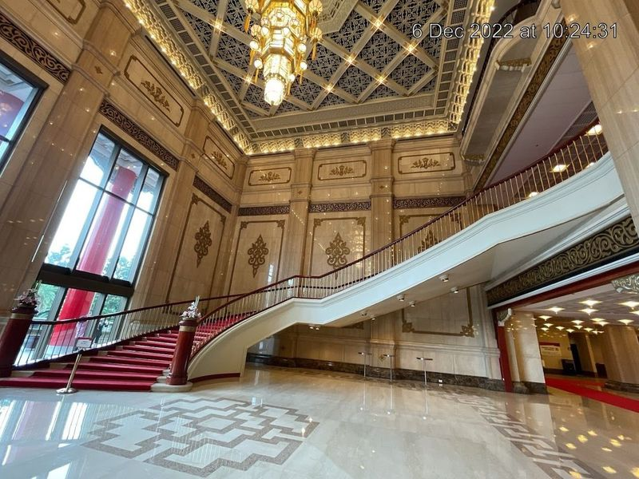
National Theater
The National Theater occupies the east flank of Liberty Square in Taipei, opened in 1987 alongside the National Concert Hall. The building's traditional palace-inspired design frames a main stage for Chinese opera, dance, and drama, forming one half of the republican capital's principal performing-arts pair on the memorial district axis.
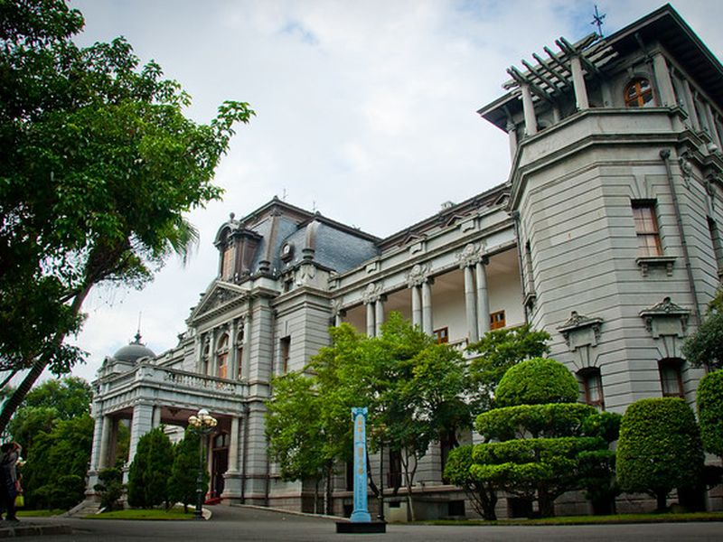
Taipei Guest House
The Taipei Guest House is a Baroque-influenced mansion completed in 1901 as the Japanese governor-general's residence in central Taipei. The Republic of China government later used it for state receptions and ceremonies; guided open days allow visitors to see salons, stair halls, and gardens within the Ministry of Foreign Affairs compound near the presidential office district.
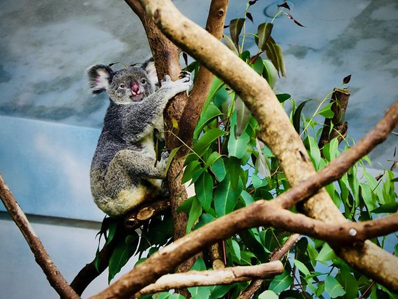
Taipei Zoo
Taipei Zoo in Wenshan district is one of Asia's largest city zoos, opened in its present Maokong foothill site in 1986. Outdoor habitats display Taiwanese species alongside giant pandas, with walkways through temperate forest zones; the grounds connect by gondola to the Maokong tea hills above the southern suburbs.
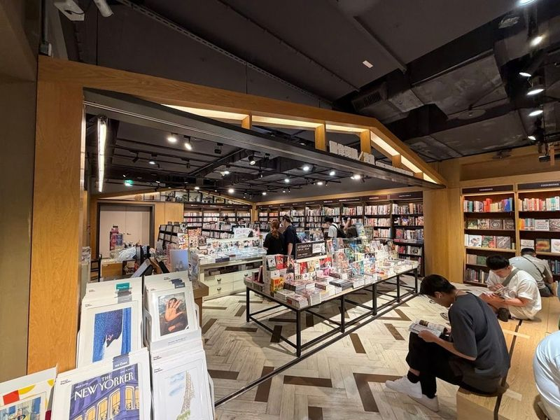
Bitan Tourist Attraction
Bitan suspension bridge and riverside park lie on the Xindian River in Xindian district, popular for boat rentals and riverside cycling. The pedestrian span connects promenades lined with tea houses above the green water gorge where the river leaves the Taipei basin toward the mountains.
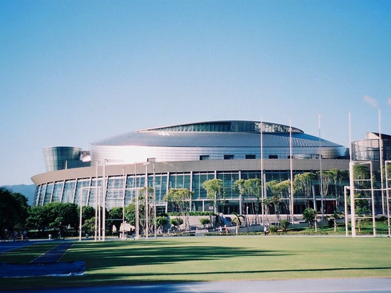
Taipei Arena
Taipei Arena is a multi-purpose indoor stadium in the Nanjing East Road corridor of central Taipei, opened in 2005. Its oval roof shelters concerts, sporting events, and trade exhibitions for audiences of about 15,000, making it one of the city's main large-scale performance venues outside the Liberty Square arts complex.
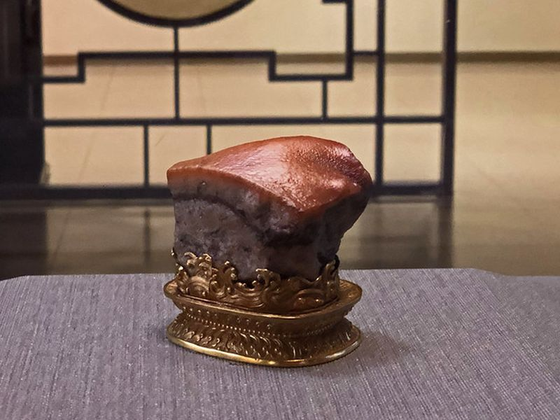
National Palace Museum
The National Palace Museum in Shilin holds Chinese imperial art collections evacuated to Taiwan in the 1940s, including jade, bronze, and scroll paintings from the former Beijing Palace Museum stores. Rotating galleries display masterpieces such as the jade cabbage in climate-controlled rooms on a hillside campus.
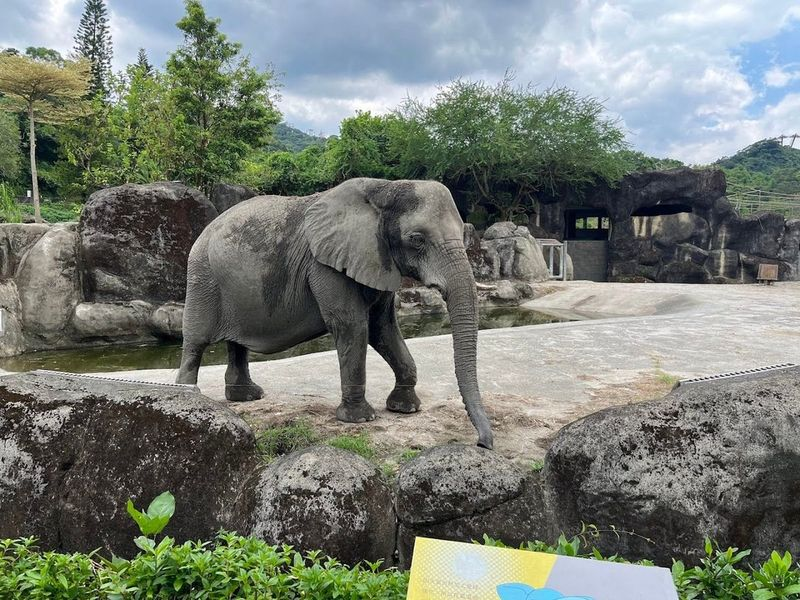
Chiang Kai-Shek Shilin Residence
The Chiang Kai-shek Memorial Hall is a large white-walled monument in central Taipei completed in 1980. Its octagonal blue-tiled roof shelters a bronze statue of the former Republic of China president, with exhibition galleries below documenting 20th-century Chinese civil war history. Liberty Square flanked by the National Concert Hall and Theatre frames the approach.
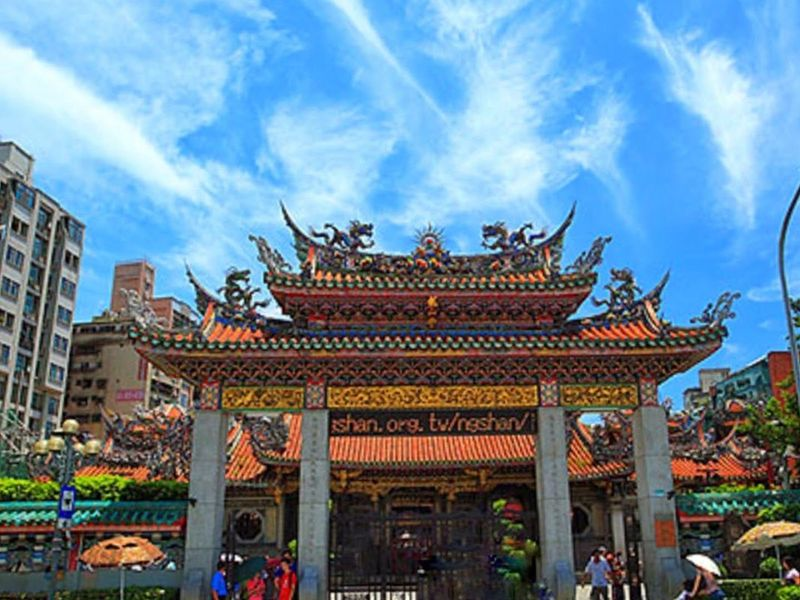
Shilin Night Market
Shilin Night Market surrounds the former Shilin market buildings in northern Taipei's Shilin district. Vendors sell fried chicken steaks, oyster omelettes, and sweets in covered arcades and side alleys, making it one of the capital's busiest and most famous evening food destinations.
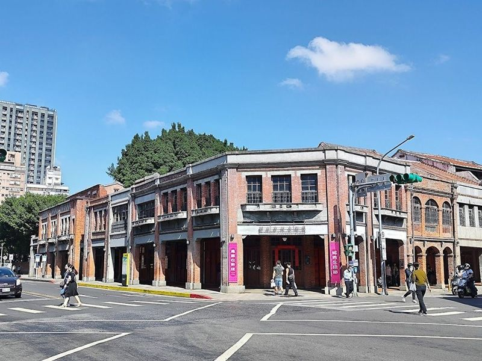
National Revolutionary Martyrs' Shrine
The National Revolutionary Martyrs' Shrine in Taipei's Zhongshan district honours armed forces personnel who died in service of the Republic of China. The 1969 complex follows northern Chinese palace architecture and hosts hourly honour-guard ceremonies at its main gate, with memorial tablets and exhibits on 20th-century military campaigns.
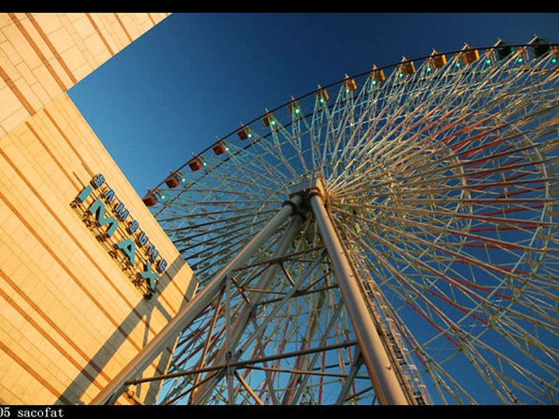
Miramar Ferris Wheel
The Miramar Ferris Wheel crowns the Miramar Entertainment Park shopping complex in Taipei's Dazhi area. The illuminated wheel rises above the Keelung River levee, giving enclosed cabins views of neighbouring Neihu and Songshan districts and the surrounding department-store and cinema complex built in the early 2000s.
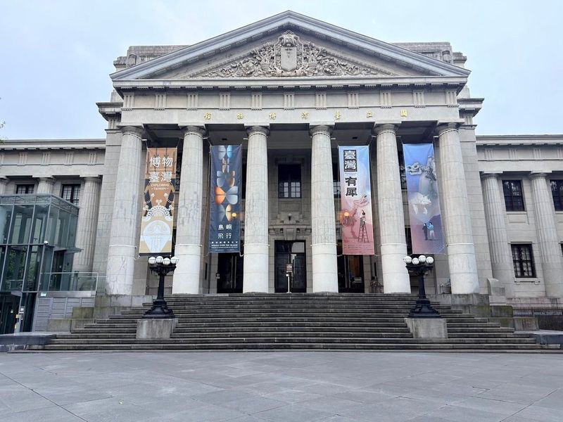
Taipei Children's Amusement Park
Taipei Children's Amusement Park in Shilin district is a municipal theme park with rides, water play areas, and theatre stages aimed at families. Attractions range from gentle carousels to roller coasters on landscaped grounds beside the Keelung River, linked by MRT to the Shilin and Miramar entertainment corridor.
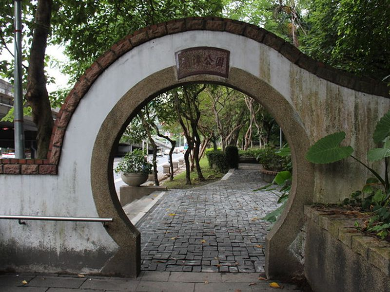
Taipei North Gate (ChengEn Gate)
Taipei North Gate, or Cheng'en Gate, is the -preserved section of the Qing-era city wall in central Taipei, completed in 1884. The granite-and-brick portal once guarded the northern approach to the walled settlement; it now stands beside elevated roads as a heritage landmark marking the old administrative centre's boundary.
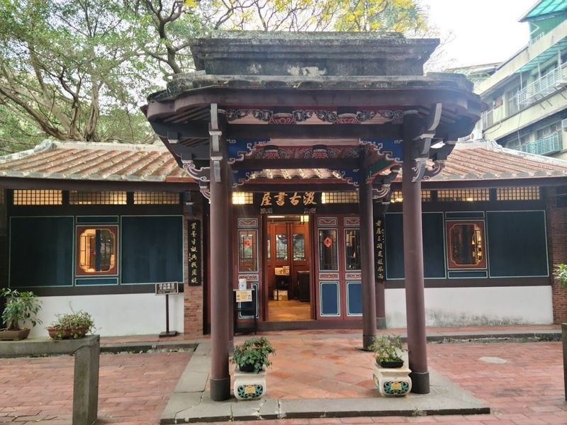
Raohe Night Market
Raohe Night Market stretches along Raohe Street in Taipei's Songshan district near Ciyou Temple. Evening stalls sell pepper buns, stinky tofu, and grilled seafood beneath lantern-lit awnings on one of the city's oldest purpose-built night-market streets, drawing crowds from the nearby Keelung River corridor.
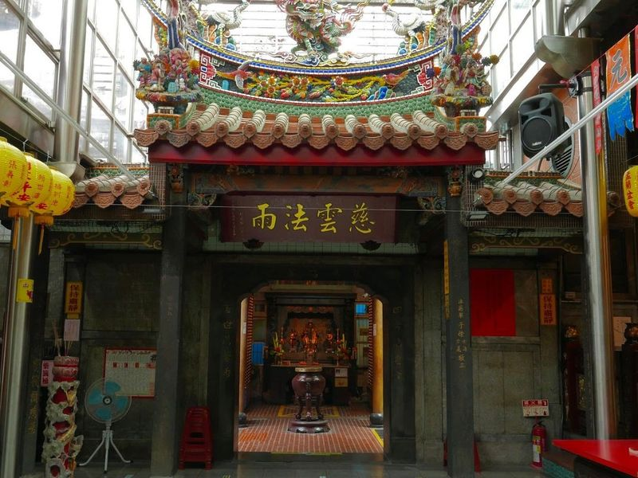
Dharma Drum Mountain Nung Chan Monastery
Dharma Drum Mountain Nung Chan Monastery in Taipei's Beitou foothills is a major Chan Buddhist monastery founded by Master Sheng Yen. The hillside campus includes meditation halls, lecture spaces, and quiet courtyards where practitioners and visitors join retreats and dharma assemblies above the geothermal hot-spring district.
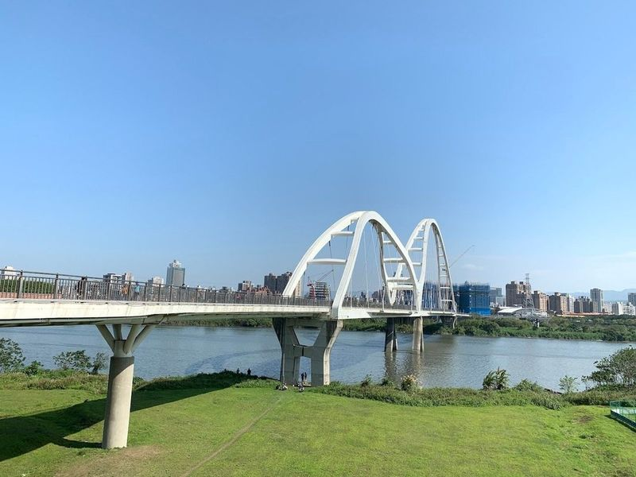
National Dr. Sun Yat-Sen Memorial Hall
The National Dr. Sun Yat-Sen Memorial Hall in Xinyi district honours the revolutionary leader considered founder of the Republic of China. Completed in 1972, its grand hall contains a seated bronze statue and exhibition galleries on Sun's political career, set within gardens and performance spaces east of Taipei 101.
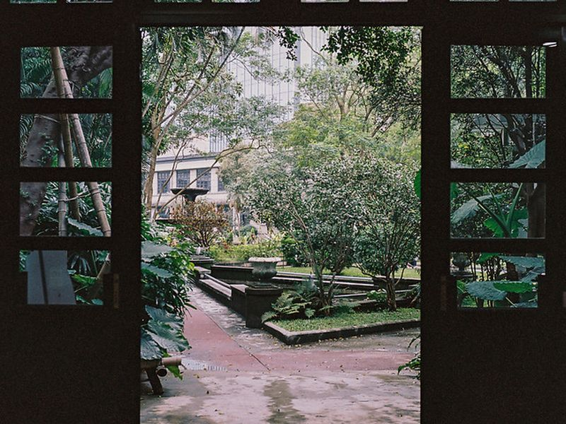
Songshan Cultural and Creative Park
Songshan Cultural and Creative Park occupies a former tobacco factory complex in Taipei's Songshan district, converted after 2011 into exhibition halls, design shops, and event spaces. Brick warehouses and art-deco offices from the Japanese colonial industrial period frame a central boulevard popular for weekend markets and design fairs.
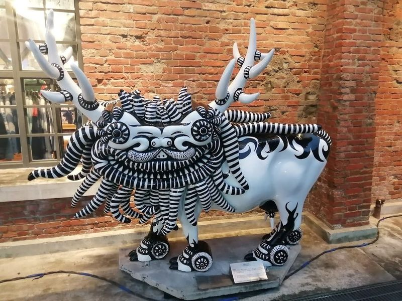
Eslite Spectrum Songyan
Eslite Spectrum Songyan is a cultural-retail complex beside Songshan Cultural and Creative Park in eastern Taipei. The multi-storey hall combines Eslite bookstore floors with food courts, performance spaces, and design boutiques in a glass-fronted building that anchors the Songyan creative district around the former tobacco factory site.
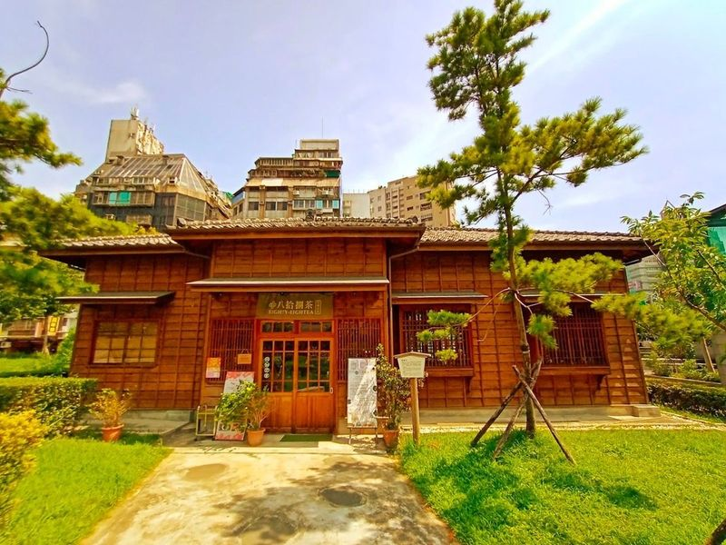
Kishu An Forest of Literature
Kishu An Forest of Literature is a restored Japanese-era timber residence in Taipei's Zhongshan district, reopened as a literary salon and exhibition space. The single-storey wooden house and surrounding camphor trees provide a quiet reading environment for poetry events and small publishing displays away from the surrounding office towers.
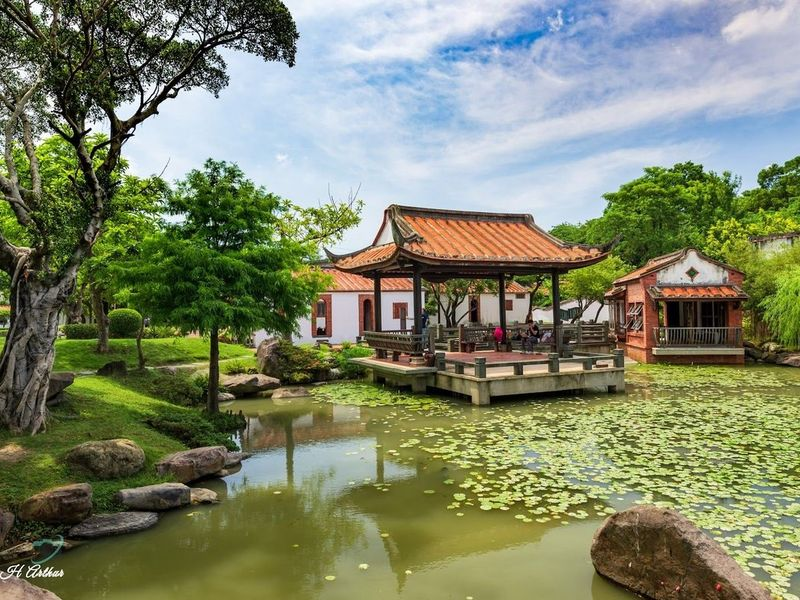
Dadaocheng
Dadaocheng is a historic merchant quarter along the Tamsui River in northern central Taipei, flourishing in the late Qing and Japanese periods as a tea and textile trading port. Dihua Street shophouses, temples, and pier warehouses survive among cafes and cultural studios in one of the city's oldest commercial neighbourhoods.
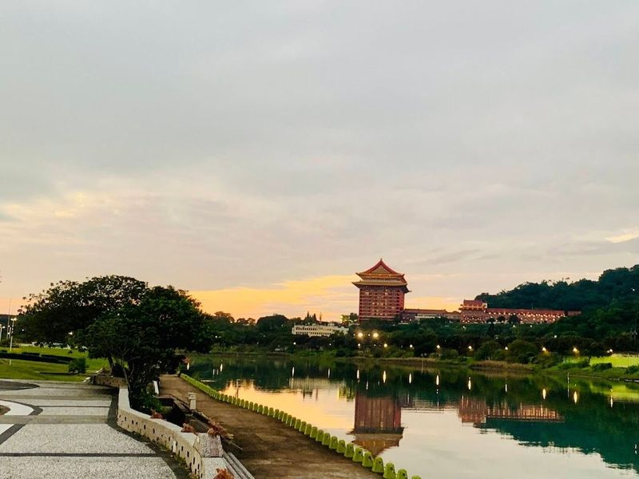
Ningxia Night Market
Ningxia Night Market is a compact food alley in Taipei's Datong district near the old city core. Stalls specialise in Taiwanese snacks such as oyster omelettes, taro balls, and herbal soups along a single pedestrian lane that predates the larger tourist night markets in Shilin and Raohe.
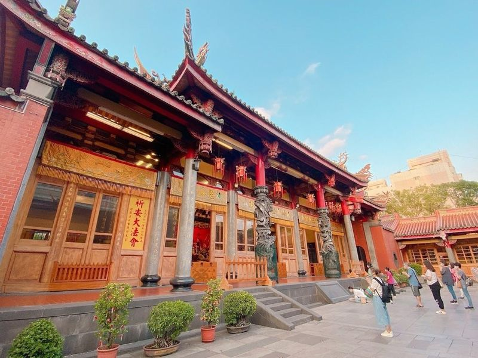
Bopiliao Historical Block
Bopiliao Historical Block in Wanhua displays restored Qing and Japanese-era lanes with tea houses and educational exhibits on Taipei urban history. The compact pedestrian zone illustrates building styles that preceded modern tower development along Guangzhou Street near Longshan Temple.
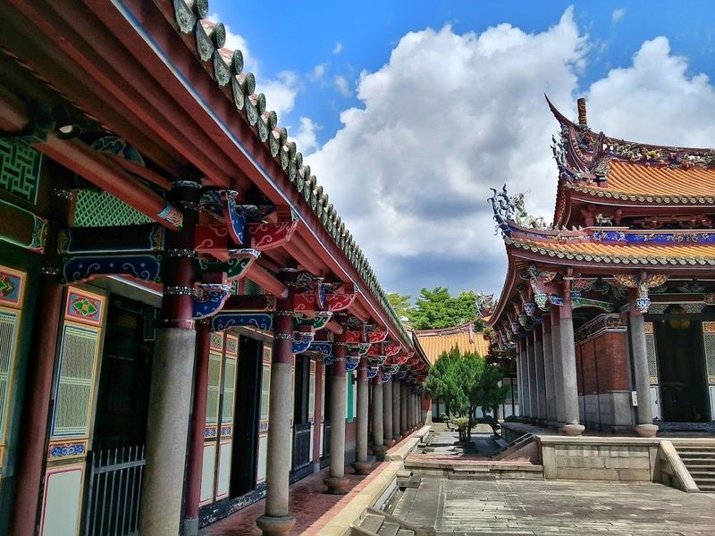
Xinfu Market
Xinfu Market is a covered public market in Taipei's Wanhua district supplying fresh produce, meat, and dry goods to neighbourhood shoppers. The post-war concrete halls and stall rows reflect everyday commercial life in the old west-side quarter near Longshan Temple, distinct from the tourist-oriented night markets elsewhere in the city.
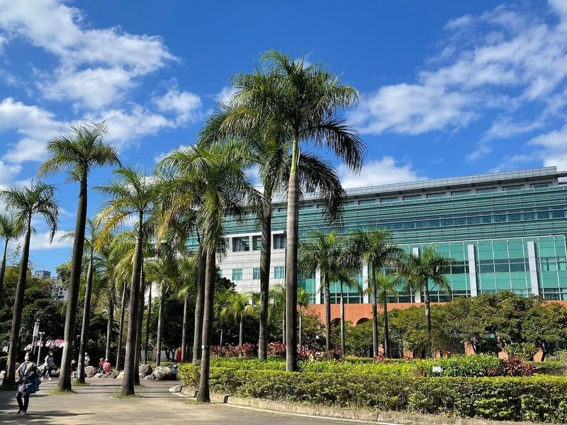
Jieyun Temple
Jieyun Temple in Taipei's Zhongshan district is a neighbourhood folk temple dedicated to local deities and community guardian spirits. The compact courtyard shrine with carved timber eaves serves residents of the surrounding lanes, continuing daily incense offerings and festival processions typical of Taipei's urban temple network.
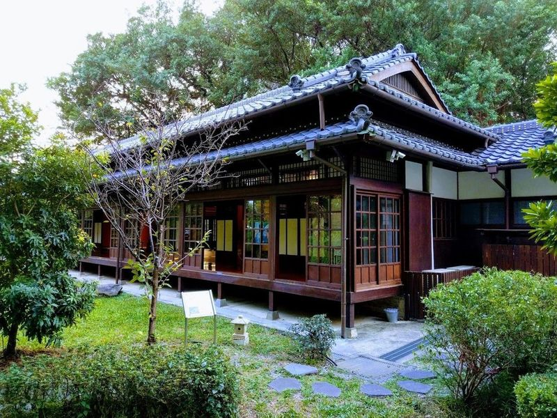
Crescent Bridge
Crescent Bridge is a pedestrian suspension span over the Xindian River in New Taipei's Xindian district, opened as part of a riverside recreation project. The curved deck links promenades and cycle paths on opposite banks, offering views of forested gorges where the river leaves the Taipei basin toward the southern mountains.
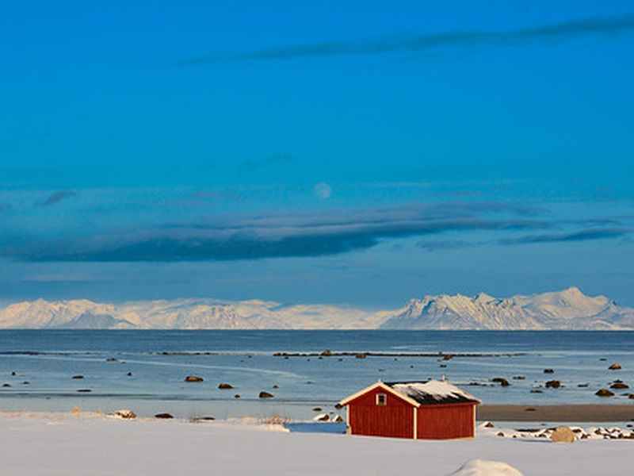
The Red House
The Red House is a red-brick market building completed in 1908 during Japanese rule, now housing craft shops and performance spaces in Ximending. Its octagonal entrance hall and cruciform market halls are protected as a municipal historic site beside the pedestrian core of Taipei's youth district.
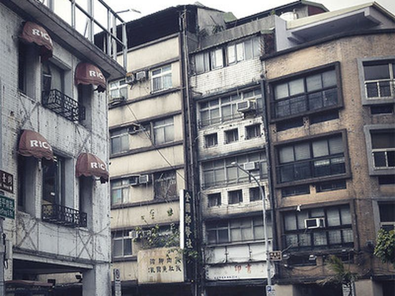
Ximending Shopping District
Ximending is Taipei's pedestrian shopping and entertainment quarter west of the old city wall line, developed from early cinema and department-store strips in the 20th century. Neon-signed lanes, street performers, and youth fashion boutiques fill blocks around the Red House, making it one of the busiest evening districts in the capital.
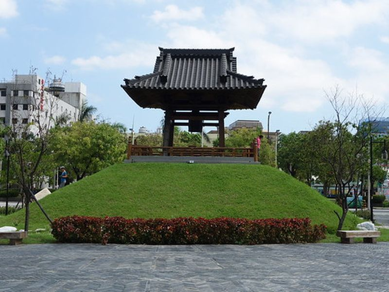
Nishi Honganji Square
Nishi Honganji Square is a landscaped plaza beside the historic Nishi Hongongji-related precinct near Ximending in central Taipei. The open space and restored brick structures recall Japanese-era Buddhist institutional architecture in the old west gate quarter, now used for community events and as a pedestrian gathering point in the Wanhua district.
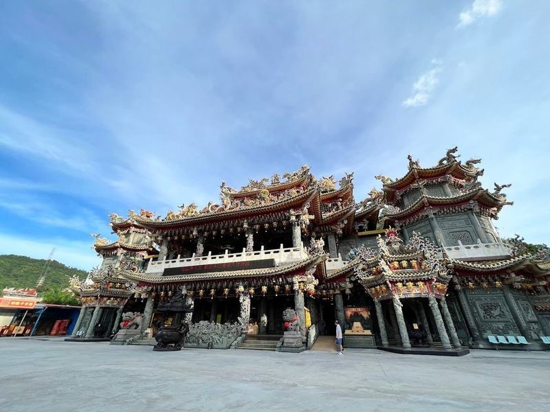
Huashan 1914 Creative Park
Huashan 1914 Creative Park occupies a former sake distillery warehouse complex near Zhongxiao station. Studios, exhibition halls, and cafés fill timber-framed buildings from the Japanese colonial industrial period, hosting design fairs and weekend performances in the Zhongzheng district.
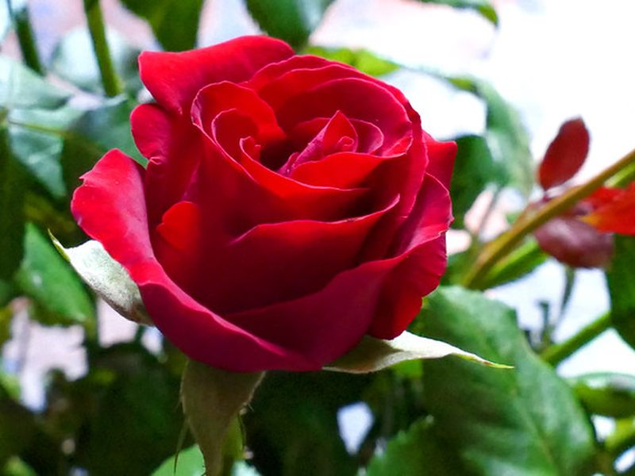
Jianguo Holiday Flower Market
Jianguo Holiday Flower Market operates under elevated roads in Taipei's Daan district on weekend mornings. Wholesale and retail vendors sell orchids, bonsai, and cut flowers along partitioned aisles beneath the Jianguo overpass, forming one of the city's largest periodic plant markets for gardeners and florists.
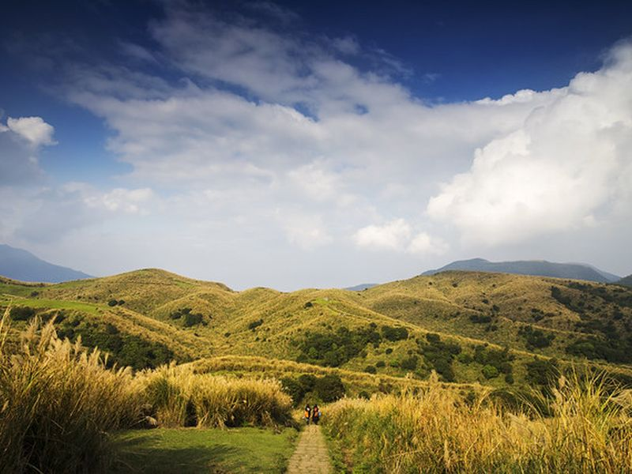
Qingtiangang Grassland
Qingtiangang Grassland is a rolling volcanic plateau within Yangmingshan National Park north of Taipei, grazed in the Japanese era and now open meadow. Wind-sculpted silvergrass and cattle trails cross the exposed ridge with views toward Taipei basin, reachable by park roads from Shilin and Beitou.
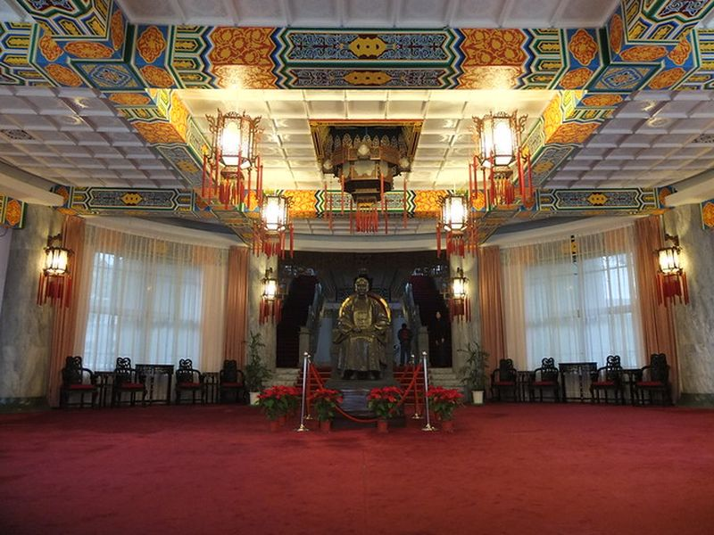
Yangmingshan Zhongshan Hall
Yangmingshan National Park covers volcanic peaks and hot springs north of Taipei city limits. Trails pass fumaroles, sulfur vents, and seasonal flower beds on slopes that were a Japanese-era recreation forest. Xiaoyoukeng and Qingtiangang grassland are among the most visited highland areas linked by park buses from Shilin.
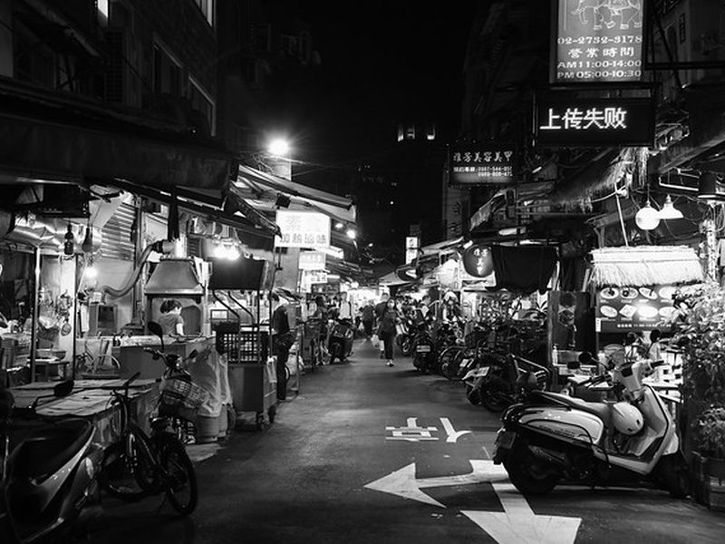
Linjiang Night Market
Linjiang Night Market, also called Tonghua Market, is a compact evening food street in Taipei's Daan district near Taipei 101. Vendors grill pepper buns, steam dumplings, and seafood along narrow lanes that draw office workers and visitors seeking classic Taiwanese night-market snacks in the Xinyi neighbourhood.
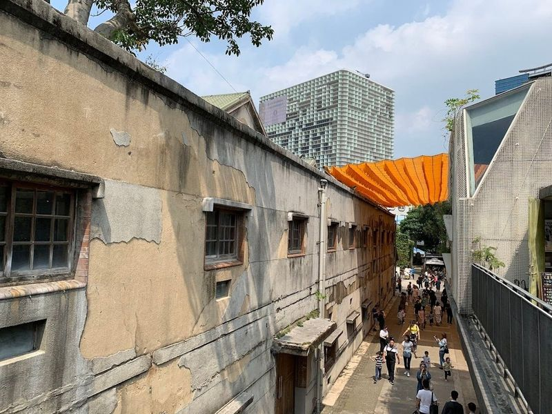
Shenkeng Old Street
Shenkeng Old Street follows the historic market lane of Shenkeng district in southeastern New Taipei, famous for tofu restaurants and soybean dishes. Qing-era shopfronts and weekend food stalls line the sloping street above the confluence of local creeks, drawing diners from Taipei for braised tofu and miso specialities.
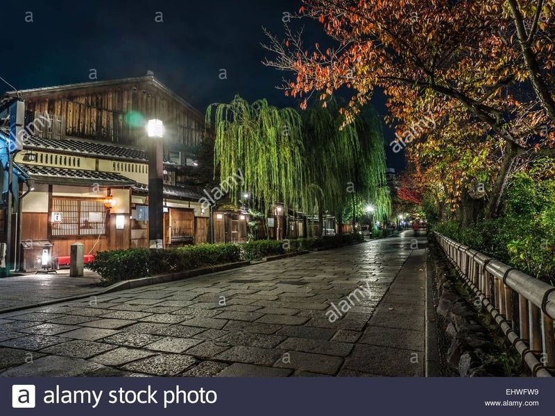
POPOP Taipei
POPOP Taipei is a creative-industry office and exhibition cluster in Taipei's Nangang district, housing animation studios, design firms, and event halls. The campus supports Taiwan's digital content sector with public showcases and workshops in a former industrial zone now linked by MRT to the eastern exhibition corridor.
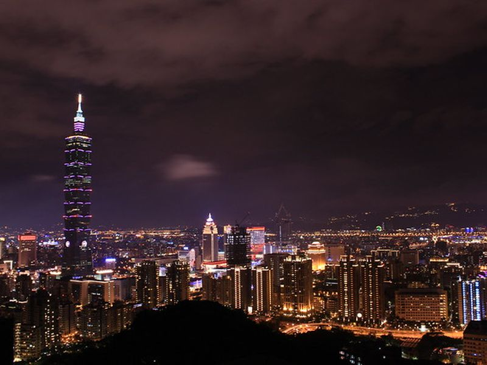
Xiangshan
Xiangshan Park at the foot of Elephant Mountain provides rest pavilions and trailheads for the steep climb toward Taipei 101 viewpoints. Locals exercise on the landscaped slopes each morning before commuters fill the Xinyi office district below the timber stairways.